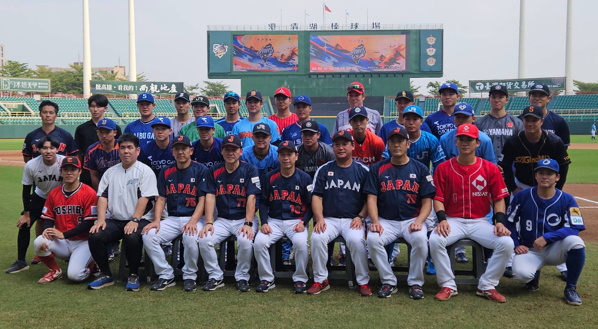
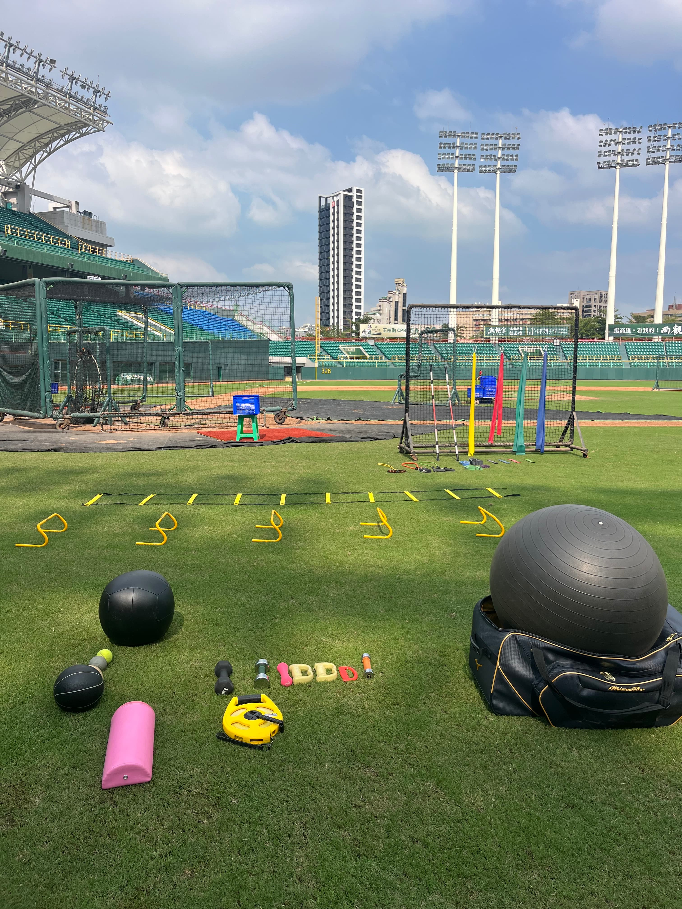

現場での様子

JABA選抜チーム帯同

JABA選抜チームの風景

試合前のフィールドトレーニング

データと現場の橋渡し

コンディショニング調整

ウォーミングアップ風景
現場 × データ × 思考がつながり、選手を支える仕組みをつくる。
整-adjustment- を土台として、
現場・理論・デザインの3つの視点から選手支援を体系化しています。
adjustment-field
現場での指導・動作評価・身体調整。
選手の変化を「いまここ」でつくる実践部門。
adjustment-lab
理論化・データ分析・アプリ開発。
現場で生まれた知見を、学びと再現性へ変換する研究部門。
adjustment-craft
デザイン・教材制作・UI／UX。
伝わる仕組みを形にするクリエイティブ部門。
富山を拠点に社会人野球・育成年代野球の現場で活動。
選手の「結果を出す tough な身体」と「再現性を生む思考」を育てるため、
トレーニング・評価・データ活用・身体調整を統合したアプローチを実践。
整-adjustment- では、現場で得た知見をアプリ・教材として体系化し、
選手や指導者が自立して成長できる仕組みづくりを行っています。
JABA選抜チーム帯同
JABA選抜チームの風景
試合前のフィールドトレーニング
データと現場の橋渡し
コンディショニング調整
ウォーミングアップ風景
走力と思考を整える Run Tracker。
走りの記録を蓄積し最大酸素摂取量を可視化。